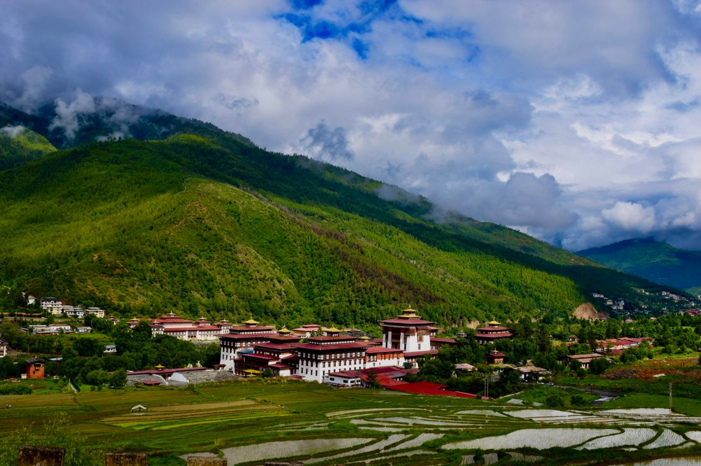
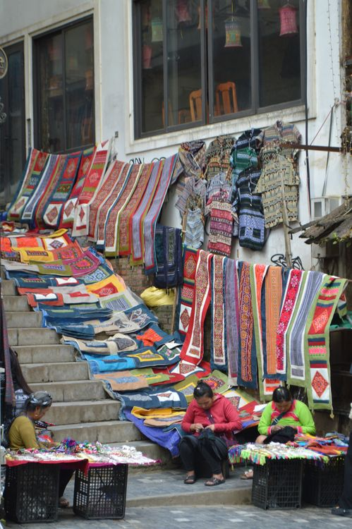

Buddha Dordenma
Take in sweeping valley views from the great golden Buddha statue above the city.
Bhutan's lively, walkable capital, where modern life and centuries-old traditions share the same valley.
Explore highlights ↓Thimphu is a capital unlike any other: small enough to explore on foot, rich with monasteries, craft traditions, markets and contemporary Bhutanese life.
Use it as a cultural base before heading over Dochula Pass toward Punakha.
Take in sweeping valley views from the great golden Buddha statue above the city.

Admire the ornate fortress-monastery and seat of Bhutan's central administration.

Browse local produce, handmade paper, textiles and traditional arts around the city.
Walk the city center, visit Memorial Chorten and explore the weekend market.
Visit Buddha Dordenma, Takin Preserve, Folk Heritage Museum and local craft studios.
See Tashichho Dzong, then take the scenic road toward Dochula or Punakha.
It combines Bhutan's government, monasteries, arts, food and everyday city life in a compact mountain setting.
Two to three days lets you cover the main landmarks while leaving space for markets and local encounters.
Yes. Dochula Pass is a scenic attraction on the route between Thimphu and Punakha, making it an easy day trip or stopover.